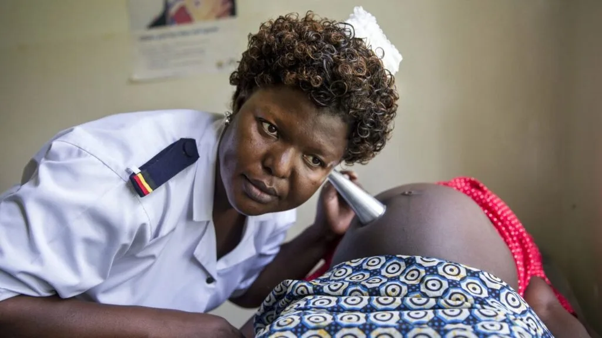

Expanded Nursing Uganda Explanation
Domiciliary Care should be reviewed through safe maternal and newborn assessment, early recognition of danger signs, respectful communication and timely referral. Connect the definition to vital signs, bleeding, fetal or newborn wellbeing, patient education and local protocol requirements.
01 Types of Domiciliary Care
- Type one domiciliary midwifery care “continuity:; In this type the woman is cared for in her home all through during antenatal period delivery and postnatal care. The woman will only visit a health unit or hospital only when there is a problem that requires specialized care or more gadgets to be used. This care is known as continuity of care or fragmented care . In this case one midwife provides all the care to the woman.
- Type two, community, integrated or centralized care ; In this care service is integrated (mixed) in a way that part of the care may be given at home and some in the health setting like a hospital. Usually antenatal or delivery may be offered in the hospital and puerperium period managed at home. This is the type of care that student midwives and nurses offer as part of their midwifery part two and is compulsory for them.
- Employee or independent practitioner in domiciliary; This is a type of care in which a midwife practices as a private midwife in the community but not necessarily on one woman. The midwife may have a maternity Centre for all or part of the care or she may combine it with one to one community midwifery care. This is the commonest type of domiciliary care in Uganda.
Forms of Domiciliary Care Characteristics of patterns of domiciliary care depend on a number of factors and these can be:
- Decision of the midwife
- Decision of the woman / family
- Location and nature of community
- Availability of basic requirements for domiciliary care
02 Objectives of Domiciliary Care.
- Domiciliary midwifery care to take midwifery near to the community thus increasing accessibility to services
- To encourage full participation and involvement of male partners and family members in the birth process so as to get their full support
- To reduce on maternal / infant morbidity and mortality as the midwife has less workload and concentrates on one woman.
- To reduce on hospital/health facility over crowding
- To promote midwife-mother relationship and mutual understanding between the woman and the midwife.
- Care before conception > Health education to young girls on good nutrition and hygiene > Teaching young girls about life skills > Immunization of young girls with tetanus toxoid > Counselling adolescents on reproductive health and other social issues
- Care during pregnancy > Immunization > Antenatal check ups > Treatment of minor problems. > Health education on problems in pregnancy
- Care during labour > Care of mother in Labour > Use of partograph to monitor labour > Delivering of the baby > Infection prevention
- Care after delivery > Immunization > Care of mother and baby > Postnatal exercises > Family planning
03 Advantages of Domiciliary Services.
- Domiciliary services promotes midwife – mother relationships and thus minimizing fears and phobias of childbirth
- It promotes continuity of care and close supervision of the mother thus – contributing to the reduction of maternal / infant morbidity and mortality
- Increases access to health services as the woman is found in her home instead of herself looking for the services
- Domiciliary is cost effective to a certain level as only relevant care will be given to individual women and at the same time the woman will continue her responsibilities especially supervision of the home
- It gives peace of mind to the mother, husband children and other house members because the woman remains at home
- It promotes woman centered care including choice control over services rendered and also encourages continuity of care.
- It promotes privacy and security and respect the mother with less interference and exposure
- Promotes good communication and openness. Only relevant information is given to the mother and her family. As the midwife knows the woman personally, she understands better their concerns, lives, and challenges and assists them accordingly.
- Promotes autonomy to the midwife and there is job satisfaction
- It promotes creativity, problem solving skills and maturity in service with good experience.
04 Brief History of Domiciliary Care
Throughout the ages, women have depended upon a skilled person, usually another woman to be with them during child birth In United Kingdom, the midwives skills are increasingly valued and midwives are being urged to expand their role even further in the field of public health.
- In Uganda in 1960’s(May 1968), this is when the midwife would look after the mother in the home environment. Midwives would do antenatal care, deliver mothers in their own homes and continue to give post natal care in the mother’s home. > This would also give opportunity for the midwife to give health education to the other family members. > In the 1970s when the political system in Uganda changed, leading to a lot of insecurity, the midwives stopped delivering mothers at home and instead delivered mothers in hospitals and maternity units. Then the midwives continued to nurse the mothers and their babies at the mother’s home. > These services have continued today and are being practiced by Private Midwives and the student midwives who are undertaking Registered Midwifery Course of Diploma in Midwifery Course.
- Group 1: Women with less risk of getting complications Women who have ever delivered one baby but have not exceeded five – that is gravid two to four. This group of women if they did not experience any major complication in pregnancy labour and puerperium, can be care for in the community throughout, pregnancy labour and puerperium
- Group 2: These are the women who are suspected of developing a complication, though they may not develop them at all. For examples: primigravida – pregnant for the first time, Grand multi para – has delivered more than four times, short women- less than 152cm high, women with previous complications that are likely to occur again e.g. cord prolapsed. This group of women may be cared for only for antenatal or delivery and puerperium depending on other factors as detected on history and assessment.
- Group 3: These are the high Risk Mothers, women who come with obvious complications, or are highly suspected of developing various complications. Examples: Multiple pregnancy – those with medical conditions like cardiac diseases, diabetes mellitus, sickle cell disease.
05 Common Drugs used in Domiciliary
- Ergometrine
- Ferrous sulphate
- Folic acid
- Panadol
- Chloroquine
06 How Domiciliary is carried out.
- Booking
A mother who has to be booked must be with the following > Must be normal with no risk factors like CPD, > Grande multi parity, multiple pregnancy
- Home delivery
The following must be put in consideration (a). Well ventilated home without without overcrowding (b). Clean house, good hygiene in and around the house (c). The house should have more than 4 bedrooms, toilets and kitchen (d). The floor must be cemented (e). There must be tap water (f). There must be easy means of boiling water
- Enough equipment especially for the mother and baby(bathing)
- Husband and wife should be willing for the care
- The distance from the home to hospital should be less than 2 miles.
In normal circumstances the midwife should be a qualified senior student midwife with enough knowledge (a) She must create a friendly relationship between her, the mother and family (b) She must remember that she does not belong to the family and is only a guest so she must adopt her behavior in relation to the family routine (c) No commands or orders should be given but advices, the midwife should be flexible (d) She should show interest in the family (e) Avoid embarrassing the mother in the family
(f) She has to apply her professional code of conduct and stay in the home only as a midwife (g) Quick and correct judgment has to be applied in providing the best care expected
The midwife must be equipped with the following
- Sphyginomanometer
- Stethoscope
- Urine testing strips
- Clinical thermometer
- Spirit for baby’s cord
- Swabs in the gallipot and cord ligatures
- Receivers, dissecting forceps, artery forceps, scissors
- Antiseptic lotion
- Plastic apron and tape measure
- Drugs like Panadol, and iron tablets
Here in Uganda a mother is delivered in the hospital then cared for in her home for seven day including the 1st days in the hospital
ANTENATAL CARE Normally a mother is booked on her 1st visit at 12wks.It should be during this time when the midwife inspect the home of the mother until the mother is delivered in the hospital and cared for the first 2 days and then 5 days at home
PUEPERIUM During puerperium the midwife continues to visit the mother daily at her home. If there is any indication of complication arising of the mother requires extra supervision and support additional visits will be made The midwife observes the mother’s general condition both mentally and physically, ask her how she is feeling. Inquire about the baby particularly feeding, sleeping, passage of urine and stool.
If the mother appears stressed, depressed, or anxious about the baby or any other problem. The midwife should sit, listens and responds. The time spent listening and discussing problems with the mother invariably of great value to her wellbeing The midwife inquires whether the mother is sleeping and eating well passing urine without difficult or discomfort and has had a bowel action. She take the mothers vitals and carries out a full postnatal examination of the breast, abdomen to palpate the uterus, vulva to inspect lochia and perineum.
Any abnormality detected should be discussed with the mother and appropriate advice is given. Postnatal exercises are taught on the first day after delivery and the mother is encouraged to practice them dairy throughout puerperium On the first postnatal visit the midwife usually assists the mother to bath there after the mother should have a bath on her own should be twice or more daily, mother should be advised to change her pads frequently.
Adequate rest and sleep are essential and though ambulating is good but the mother should rest and sleep at appropriate time each day. The mid wife performs a daily examination on the baby and shows the mother how to bath and dress the baby and attend to the cord.
- > She observes its general condition, examine him from head to toe observing the skin, eyes, mouth and cord for any signs of infection or any abnormality.
- > Stool should be observed and the passage of urine.
- > Baby should be observed whether breastfeeding well
- > At the last visit, the mid wife advises the mother when to go back to postnatal clinic and the baby to health clinic.
- > Health educate and demonstrates to the mother the postnatal exercises.
07 Nursing Uganda Clinical Lens
Use Domiciliary Care as a practical nursing topic, not only a memorized definition. Read the topic through the safety of two patients: the mother and the fetus or newborn.
- What to understand first: define domiciliary care, identify the normal or expected pattern, then explain what changes when the patient is unwell.
- Why it matters in care: the nurse must recognize risk early, explain findings clearly, document accurately and know when to escalate.
- How to revise it: connect each point to assessment, nursing diagnosis or care problem, intervention, rationale and evaluation.
08 Assessment Guide
- Maternal vital signs, bleeding, pain, contractions, uterine tone and danger signs.
- Fetal or newborn wellbeing, feeding, temperature, breathing and activity.
- History of pregnancy, parity, medications, allergies, investigations and referral risks.
09 Nursing Priorities, Rationales and Outcomes
- Recognize danger signs early and escalate without delay.
- Provide respectful communication, privacy, infection prevention and clear documentation.
- Teach the mother what to monitor at home and when to return urgently.
The rationale for these priorities is patient safety: nursing actions should prevent deterioration, reduce discomfort, support recovery and create clear evidence for the next caregiver.
- Expected outcome: Mother and baby remain stable, danger signs are acted on early, and the family understands follow-up instructions.
10 Patient Teaching and Revision Check
- Explain domiciliary care in simple language the patient or caregiver can repeat back.
- Teach warning signs, medicine or follow-up instructions, hygiene or lifestyle points where relevant.
- For exams, prepare a short answer using: definition, causes or risk factors, signs, assessment, management, complications and prevention.
- For ward practice, document baseline findings, actions taken, patient response and the plan for review.
Illustrations and Diagrams (2)


Related Video Lectures
Watch nursing lecture videos on YouTube for this topic. Opens in a new tab.
Watch on YouTubeExternal link: YouTube may use its own cookies and terms. Nursing Uganda is not affiliated with YouTube.